Project Title & Objective
Title: Low-Shot Computational Ghost Imaging via DiffTransFuse
Objective: Develop deep learning methods that reconstruct high-quality images from very few single-pixel measurements (500–5,000 shots), achieving a 10–20× reduction in acquisition time compared to conventional computational ghost imaging.
The Research Problem
In computational ghost imaging (CGI), an image is reconstructed from scalar measurements taken with known random illumination patterns. The conventional approach — Differential Ghost Imaging (DGI) — requires thousands of measurements for acceptable quality. At low shot counts (e.g., 500), DGI produces extremely noisy images unusable for microscopy.
Experiment Chain
Each experiment builds on the previous one.
9.99 dB
21.21 dB
21.13 dB
18.49 dB
21.35 dB
PSNR values at N = 500 shots on the held-out test set (2,000 images × 3 seeds = 6,000 samples).
Key Contributions
- 10× measurement reduction: U-Net at 1,000 shots matches or exceeds conventional DGI at 10,000 shots.
- DiffTransFuse two-stage paradigm: Freeze a diffusion encoder, attach a Transformer fusion decoder for single-pass reconstruction.
- E4a surpasses E1 at all shot counts: Statistically significant improvement (paired bootstrap CIs exclude zero).
- 61.7× speedup: E4 replaces 100-step DDIM sampling with a single forward pass (4.5 ms vs 275 ms).
- Honest reporting: E3 diffusion underperformed the baseline; we document all failures transparently.

Project Timeline
| Phase | Experiment | What We Did | Key Outcome |
|---|---|---|---|
| Phase 1 | Onion study | U-Net on 341 onion micrographs | 10× measurement reduction validated |
| Phase 2 | MedMNIST+ extension | Scaled to 10K blood + tissue images | Passes at 1K shots combined |
| Phase 3 | Poisson noise | Tested robustness to detector noise | Passes at 1K shots at all noise levels |
| Phase 4 | E2: Loss ablation | MSE+SSIM, MSE+edge, MSE+SSIM+edge | MSE+SSIM best for SSIM, MSE best for PSNR |
| Phase 5 | E3: Residual diffusion | Diffusion U-Net for residual prediction | Underperformed E1 by 2–3 dB; learned rich features |
| Phase 6 | E4: TransFusionNet | Transformer fusion decoder on frozen E3 | Best PSNR + 61.7× speedup over E3 |
Ghost Imaging Fundamentals
Understanding the physics and mathematics of computational ghost imaging.
What Is Ghost Imaging?
Ghost imaging reconstructs an image using a single-pixel (bucket) detector combined with known illumination patterns. The image is built from the correlation between the patterns and the bucket measurements.
The Measurement Equation
When we illuminate object O with pattern Pi, the bucket detector records one scalar:
Our image has 64 × 64 = 4,096 unknowns. With N = 500 measurements, the system is highly under-determined.
Random Illumination Patterns
Key properties: maximum entropy, per-pixel variance s² = p(1 − p) = 0.25, deterministic via seed. Shot counts N ∈ {500, 1000, 2000, 5000} are nested prefixes of a single 10,000-shot sequence.
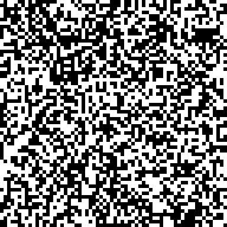
Differential Ghost Imaging (DGI)
Calibrated: Ô = DGI/s² + k, where k = <B>/<R>, clipped to [0,1]. DGI is the input to all neural networks.
Why DGI Is Noisy at Low Shots
Computational vs Physical Ghost Imaging
Physical Ghost Imaging
- Real laser + SLM/DMD
- Physical beam splitter and lenses
- Real single-pixel detector
- Subject to photon shot noise, detector noise
- Speckle patterns from coherent light
Our Simulation (CGI)
- Computed patterns using RNG
- Inner product computed numerically
- No physical detector — exact measurement
- Noise-free buckets (Poisson tested separately)
- Binary Bernoulli patterns, not speckles
Code: Pattern generation & bucket measurements
Source: 01_UNet_Baseline/src/ghost_imaging.py
Code: DGI reconstruction
Source: 01_UNet_Baseline/src/reconstruction.py
Dataset & Preprocessing
From raw medical images to ghost imaging objects.
BloodMNIST
5,000 images of peripheral blood cells at 64×64. 8 cell types.
PathMNIST
5,000 images of colon tissue patches at 64×64. 8 tissue types.
| Property | Value |
|---|---|
| Total images | 10,000 (5K blood + 5K tissue) |
| Training / Validation / Test | 7,000 / 1,000 / 2,000 (held-out) |
| Resolution | 64 × 64 pixels, single-channel grayscale |
| Value range | [0, 1] continuous |
Preprocessing Pipeline
- sRGB → Linear RGB via inverse sRGB transfer function
- Linear Luminance: Y = 0.2126×R + 0.7152×G + 0.0722×B (Rec. 709)
- Centre crop to largest square, then downsample to 64×64 via box filter
- No contrast stretching: object keeps its physical [0,1] scale
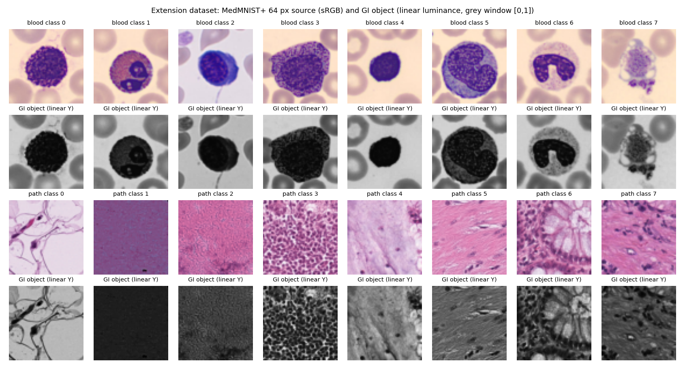
E1 — Baseline U-Net
Supervised encoder-decoder that maps noisy DGI to clean objects.

E2 — Loss Function Ablation
| Variant | Loss | Weights | Best For |
|---|---|---|---|
| E2a | MSE + SSIM | λSSIM = 0.1 | SSIM improvement (+0.02–0.03) |
| E2b | MSE + Edge (Sobel) | λedge = 0.05 | Marginal edge improvement |
| E2c | MSE + SSIM + Edge | λSSIM=0.1, λedge=0.05 | No synergy over E2a |
E3 — Residual Diffusion U-Net
Learns r0 = O − DGI via iterative denoising.
E4 — TransFusionNet (Core Contribution)
Frozen E3 encoder → Bottleneck Transformer → CNN decoder with SE channel attention.
| Component | Parameters | Trainable? |
|---|---|---|
| Frozen E3 encoder | 2,999,393 | No (frozen) |
| Transformer (4 layers, 4 heads, dim=256) | ~3,175,000 | Yes |
| CNN decoder + SE attention | ~1,285,000 | Yes |
| Total trainable | 4,460,097 | Yes |


PSNR Comparison (dB) — Held-Out Test Set
2,000 images × 3 seeds = 6,000 samples. Higher is better.
| N | DGI | E1 (U-Net) | E2a | E3a | E4a (MSE) | E4b (MSE+SSIM) |
|---|---|---|---|---|---|---|
| 500 | 9.99 | 21.21 | 21.13 | 18.49 | 21.35 | 21.31 |
| 1,000 | 11.66 | 22.80 | 22.71 | 20.05 | 22.85 | 22.79 |
| 2,000 | 13.76 | 24.45 | 24.41 | 22.13 | 24.60 | 24.50 |
| 5,000 | 17.03 | 26.65 | 26.56 | 24.45 | 26.78 | 26.59 |
SSIM Comparison — Held-Out Test Set
| N | DGI | E1 | E2a | E3a | E4a | E4b |
|---|---|---|---|---|---|---|
| 500 | 0.139 | 0.579 | 0.605 | 0.484 | 0.592 | 0.612 |
| 1,000 | 0.204 | 0.669 | 0.686 | 0.571 | 0.678 | 0.692 |
| 2,000 | 0.291 | 0.741 | 0.755 | 0.662 | 0.748 | 0.759 |
| 5,000 | 0.428 | 0.820 | 0.826 | 0.759 | 0.823 | 0.830 |
Inference Latency
Statistical Significance — Paired Bootstrap 95% CIs
2,000 resamples, clustered by image with 3 seeds.
| Comparison | Metric | N=500 | N=1,000 | N=2,000 | N=5,000 |
|---|---|---|---|---|---|
| E4a − E1 | PSNR | +0.14 ✓ | +0.05 ✓ | +0.15 ✓ | +0.13 ✓ |
| E4b − E1 | SSIM | +0.033 ✓ | +0.024 ✓ | +0.018 ✓ | +0.010 ✓ |
| E4b − E1 | PSNR | +0.10 ✓ | −0.01 × | +0.04 ✓ | −0.06 × |
✓ = significant. × = not significant. E4b is NOT significantly better than E1 for PSNR at N=1000 and N=5000.
Metrics Explained
PSNR
Pixel-level error. Higher = better. Range: 20–27 dB.
SSIM
Structural similarity via 11×11 Gaussian window. Range [−1,1]. Better human perception correlation.
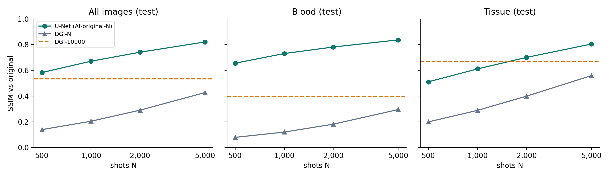
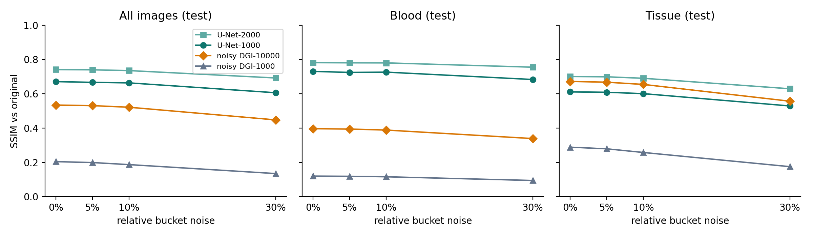
Reconstruction Gallery — Held-Out Test Set
DGI → E1 → E2a → E3a → E4a → E4b → Ground truth. All from held-out test set (never seen during training).
N = 500 (Hardest Case)

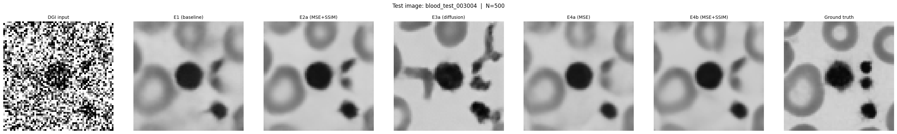
N = 1,000

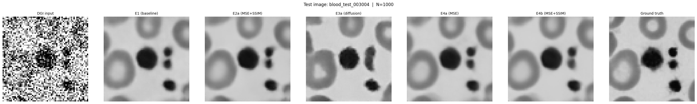
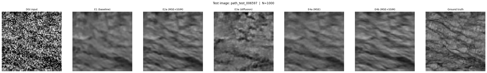
N = 2,000
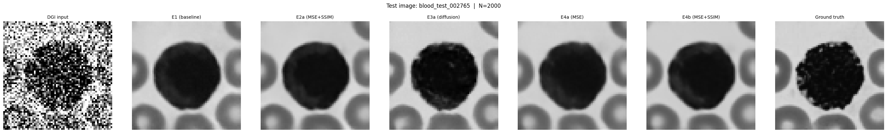
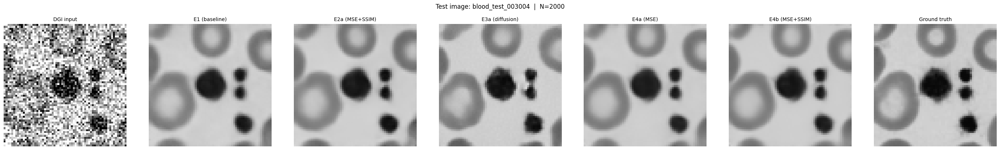
N = 5,000 (Easiest Case)
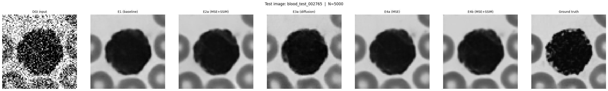
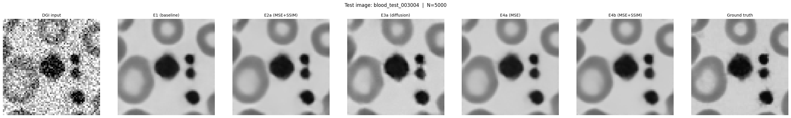
Model Comparison Strips (Validation Set)
Additional comparisons from the validation set at N=500, 1000, and 5000.
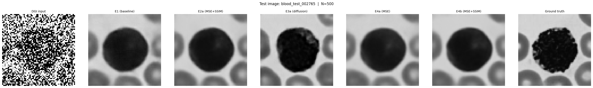
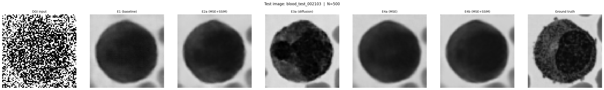

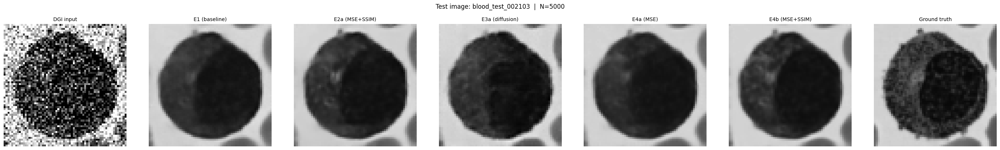
Additional Visualizations
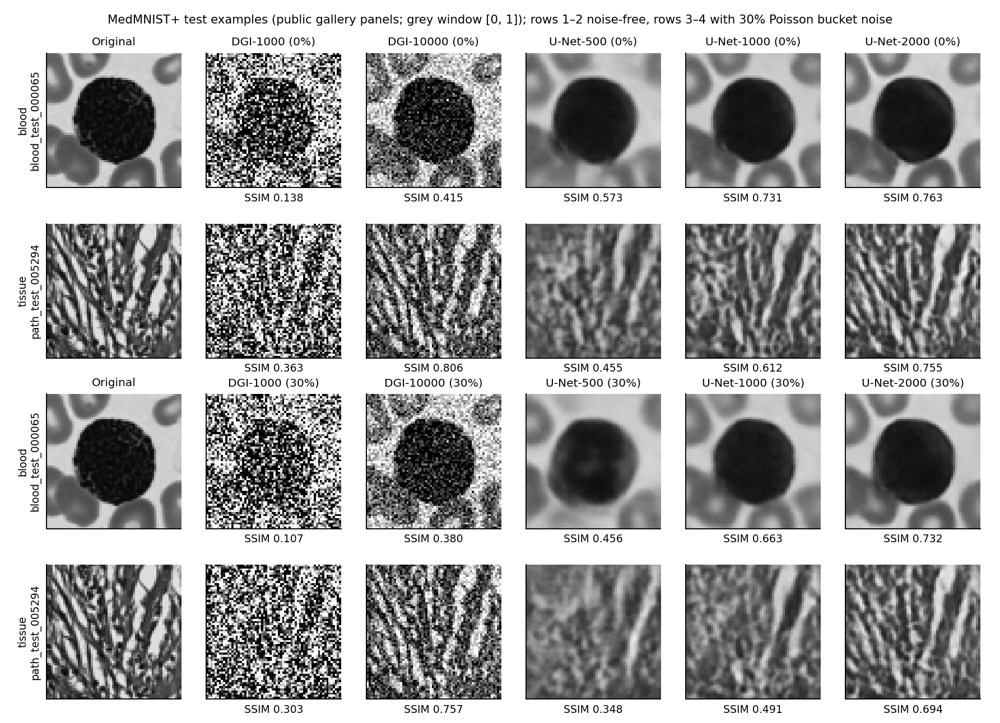
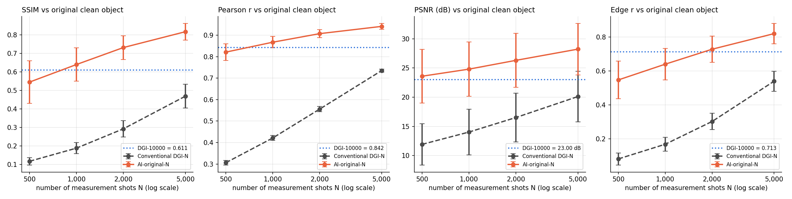
Repository Structure
Key Source Files
| File | Purpose | Key API |
|---|---|---|
ghost_imaging.py | Pattern generation & bucket measurements | generate_patterns(), bucket_measurements() |
reconstruction.py | CGI and DGI reconstruction | dgi_reconstruct(), StreamingDGI |
unet_gi.py | E1 baseline U-Net | UNetGI(base=32, depth=3) |
unet_diffusion.py | E3 diffusion U-Net | DiffusionUNet, ResBlock |
diffusion.py | Gaussian diffusion + DDIM | GaussianDiffusion |
transformer_fusion.py | E4 TransFusionNet | TransFusionNet, FusionBlock |
losses_v2.py | SSIM, edge, combined losses | ssim_loss(), combined_loss() |
How to Run
01_UNet_Baseline/ is frozen with MD5 manifests.Reproducibility
- Test DGI seeds [3040–3042] distinct from training (30M+) and validation (2040–2042)
- Training seed = 0 for all runs
- GPU results reproduce exactly only with same batch layout
Limitations & Future Work
| Limitation | Impact | Potential Solution |
|---|---|---|
| Simulation only | No hardware validation | Partner with optics lab |
| 64×64 resolution | Too low for clinical use | Scale to 256×256 |
| Grayscale only | Cannot recover colour | Multi-channel detection |
| Single dataset | Generalization untested | Test on natural images |
| Modest E4 gains | 0.05–0.15 dB | Larger architectures |
| Input mismatch | Frozen encoder OOD | Fine-tune or redesign input |
| No random-init ablation | Cannot isolate pretrained benefit | Train E4 with random encoder |
| E4b PSNR trade-off | SSIM loss hurts PSNR at high N | Adaptive loss weighting |
Viva Preparation — Q&A
35 questions with answers. Click to expand.